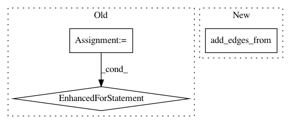

91e641a8fa7a4e408b3b34fd8223bb278d8f2f47,pygsp/tests/test_graphs.py,TestImportExport,test_networkx_signal_import,#TestImportExport#,714
Before Change
nx.set_node_attributes(g_nx, dic_signal, "signal1")
g = graphs.Graph.from_networkx(g_nx)
for i, node in enumerate(g_nx.node):
self.assertEqual(g.signals["signal1"][i],
nx.get_node_attributes(g_nx, "signal1")[node])
def test_no_weights(self):
adjacency = np.array([[0, 1, 0], [1, 0, 1], [0, 1, 0]])
After Change
def test_networkx_signal_import(self):
graph_nx = nx.Graph()
graph_nx.add_nodes_from(range(2, 5))
graph_nx.add_edges_from([(3, 4), (2, 4), (3, 5)])
nx.set_node_attributes(graph_nx, {2: 4, 3: 5, 5: 2.3}, "s")
graph_pg = graphs.Graph.from_networkx(graph_nx)
np.testing.assert_allclose(graph_pg.signals["s"], [4, 5, np.nan, 2.3])
In pattern: SUPERPATTERN
Frequency: 4
Non-data size: 3
Instances
Project Name: epfl-lts2/pygsp
Commit Name: 91e641a8fa7a4e408b3b34fd8223bb278d8f2f47
Time: 2019-03-20
Author: michael.defferrard@epfl.ch
File Name: pygsp/tests/test_graphs.py
Class Name: TestImportExport
Method Name: test_networkx_signal_import
Project Name: pgmpy/pgmpy
Commit Name: 8bf1fc92d6660b92d2ffb4c1f1a588f38f034372
Time: 2020-06-13
Author: ankurankan@gmail.com
File Name: pgmpy/models/MarkovModel.py
Class Name: MarkovModel
Method Name: to_bayesian_model
Project Name: pgmpy/pgmpy
Commit Name: 8c396a54d327f3620f329492b6716e849d77cb93
Time: 2013-12-28
Author: ankurankan@gmail.com
File Name: src/BayesianModel/BayesianModel.py
Class Name: BayesianModel
Method Name: add_edges
Project Name: pgmpy/pgmpy
Commit Name: e4c5d2324c81ea00a3587bb77baa78fc1516b988
Time: 2014-05-31
Author: ankurankan@gmail.com
File Name: pgmpy/Factor/CPD.py
Class Name: TreeCPD
Method Name: add_edges_from